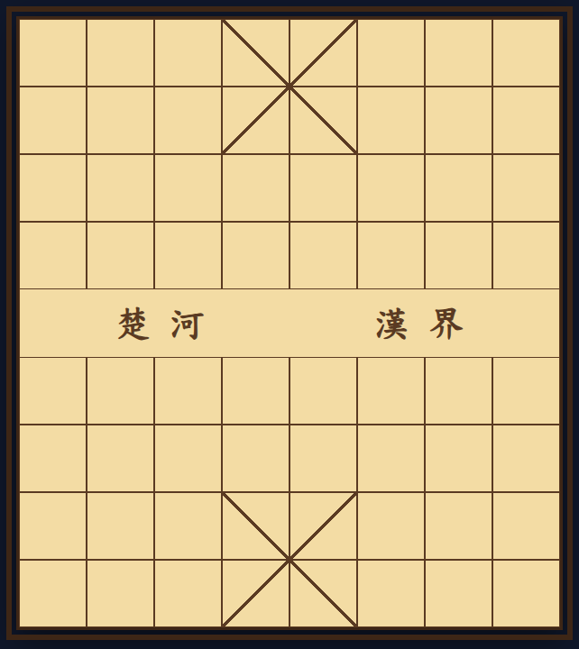
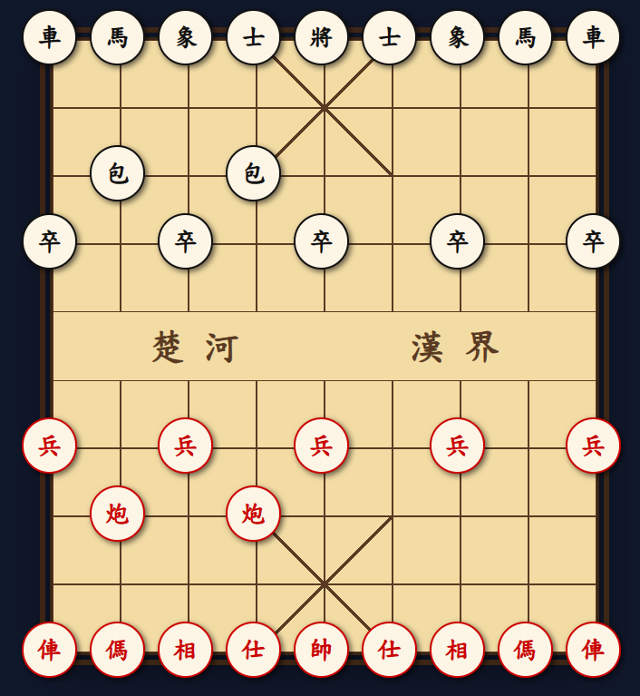
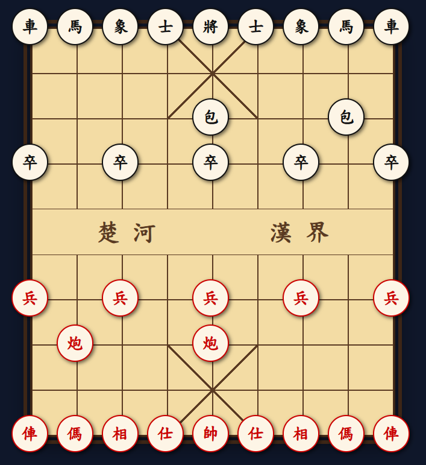
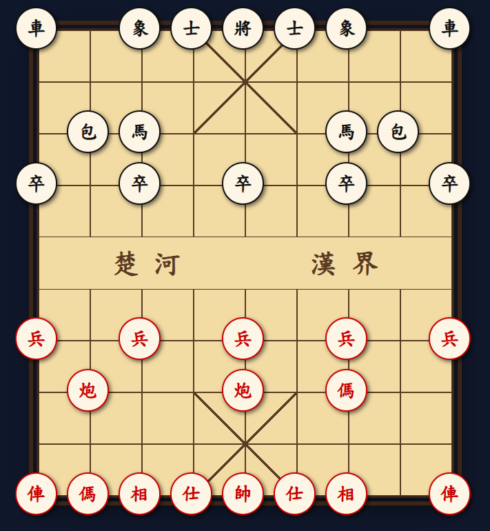
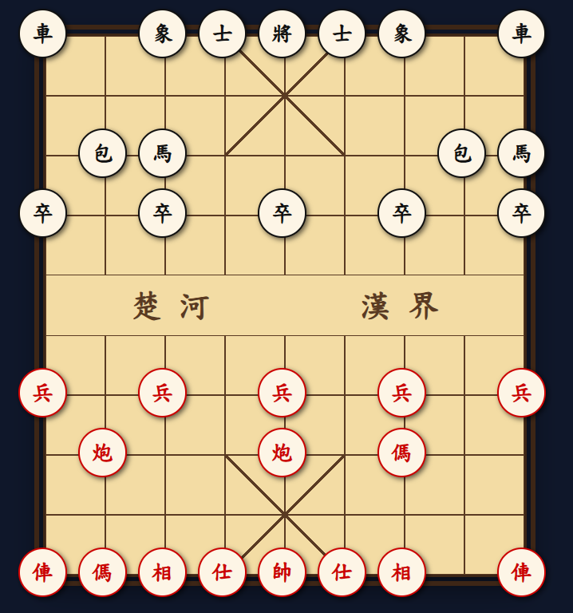
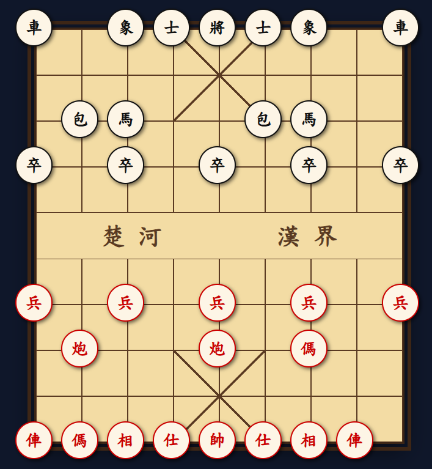
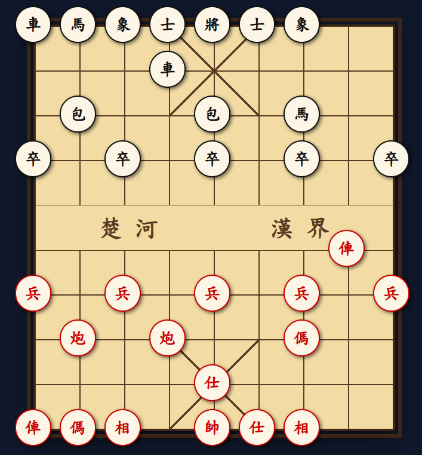
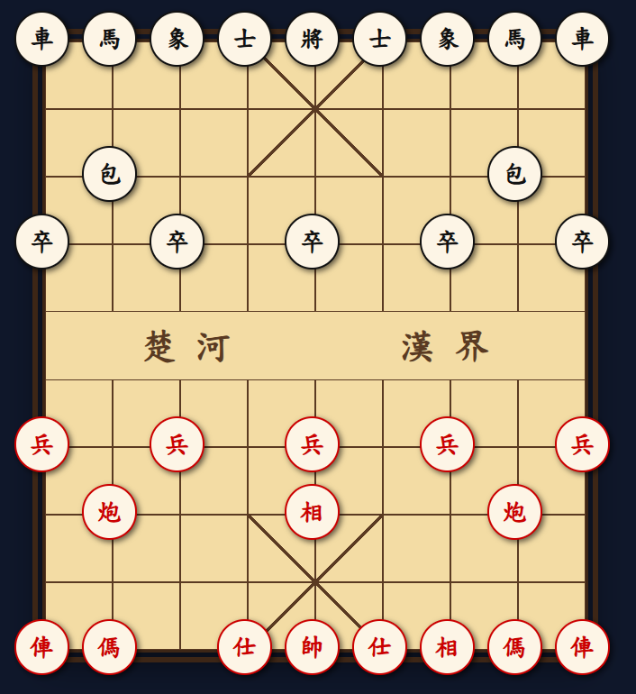
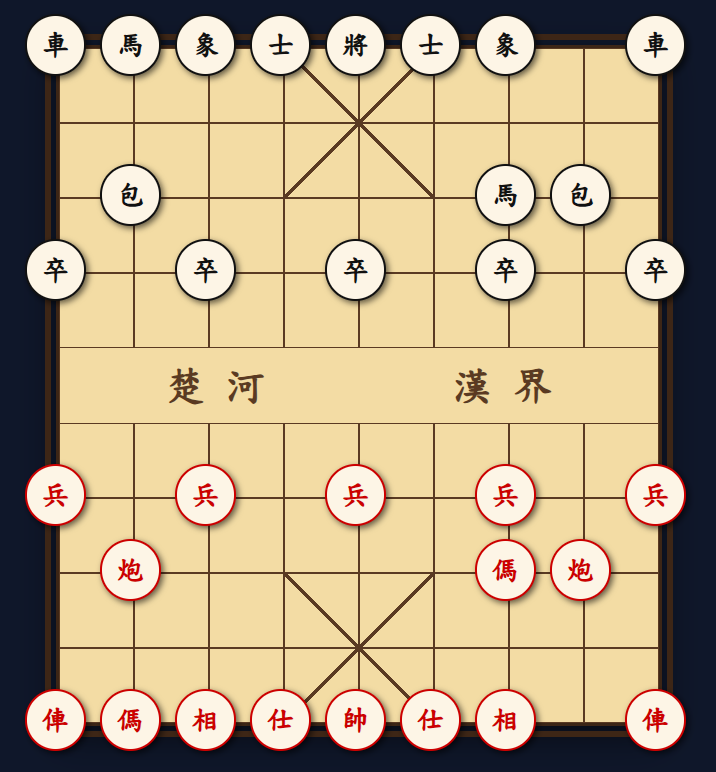
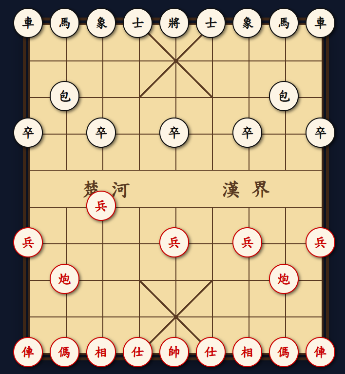

《象棋》
兩軍對敵立雙營，坐運神機決死生。
千里封疆馳鐵馬，一川波浪動金兵。
虞姬歌舞悲垓下，反將旌旗逼楚城。
興盡計窮征戰罷，松蔭花影滿棋枰。
歡迎來到象棋教學網！
這裡專為零基礎初學者量身打造，由淺入深帶你認識楚河漢界。我們透過圖像化的棋步拆解、經典對局剖析與趣味實戰引導，讓你輕鬆掌握調兵遣將的秘訣。無需害怕複雜規則，跟著我們跨出第一步，讓您在與好友的對局中能輕鬆取得勝利！
👉 點擊左上方選單，您可以按照步驟循序漸進學習象棋。
「基礎規則」給第一次接觸象棋的你(妳)！
「常見開局介紹」給開局猶豫不決要下哪一步的你(妳)！
「中局戰略引導」給想在對局時讓對手大為震驚的你(妳)！
「基本殺法介紹」給想在最後一招致勝的你(妳)！
「新手互動教學」給想親自體驗每個棋子的走法的你(妳)！
「實戰對戰盤」給已經準備好的你(妳)！
遊戲基本觀念
象棋是一款經典的策略遊戲，雙方透過調度軍隊，以「將死」對方主帥為最終目標。
- 九宮格： 雙方將帥與士仕的活動範圍，絕對不能離開這裡。
- 楚河漢界： 棋盤中間的空白區。兵卒過河後戰力提升；相象則絕對不能過河。
- 將軍與將死： 當你的棋子下一步能吃掉對方的將帥，稱為「將軍」；若對方無法化解，則為「將死」，遊戲結束。

棋子走法詳解
熟悉每個兵種的移動與攻擊方式，是贏得勝利的第一步！
帥 / 將 (General)
走法： 每次只能直走或橫走一格。
限制： 不能離開九宮格。
仕 / 士 (Advisor)
走法： 每次只能斜走一格。
限制： 絕對不能離開九宮格。它們是保護將帥的貼身護衛。
相 / 象 (Elephant)
走法： 每次走對角線兩格，軌跡為「田」字。
限制： 絕對不能越過楚河漢界。
俥 / 車 (Chariot)
走法： 無論直走或橫走，距離不受限制。
特色： 象棋中威力最強、機動性最高的棋子。
傌 / 馬 (Horse)
走法： 先直走或橫走一格，再斜走一格，軌跡為「日」字對角線。
炮 / 包 (Cannon)
走法： 不吃子時，移動方式與「車」完全相同，直橫無限制。
兵 / 卒 (Pawn)
走法： 永遠不能後退。過河前，每次只能直走前進一格。
常見開局介紹
這裡有幾個高手常使用的開局方式，提供給您選擇。
順手砲
順手炮，也稱順炮，中國象棋四大佈局一種。由於雙方移動同一方向的中炮，故名。其特點是對攻性強。明譜《橘中秘》被視為研究中炮局的重要經典，當中尤對順手炮的研究十分深入。順手炮和逆手炮，目的均是對衡對方的中炮，屬於「鬥炮局」。順手炮是主動進攻的棋法，後著變法也很大，通常會根據對方的行法而作用變化。

逆手砲
由於雙方移動不同方向的中炮，故名。和順手炮一樣，其特點是對攻性強。可是如果黑方步步跟隨紅方，紅方會有優勢。順手炮和逆手炮，目的均是對衡對方的中炮，屬於「鬥炮局」。此局優點為取後中先，對方如打中兵，則可行（士６進５），車馬均可先出（馬８進７）、（車９平８），轉後手為先手，亦可令對手之中炮處於困境，否則同一佈置，針鋒相對，亦令其無隙可乘

中砲對屏風馬
「中砲對屏風馬」是中國象棋中最經典的攻守體系之一。中砲（當頭炮）講究強勢中路強攻，而屏風馬則以嚴密防守、雙馬互保見長。雙方佈局變化極多，主要分為紅方進攻型的「五八炮」、「過河車」、「巡河炮」等戰術。

中砲對單提馬
中砲對單提馬是中國象棋中經典且具對抗性的開局。紅方以中路突破為核心，發揮先手威力；黑方單提馬則七子聯根，防守極具韌性。通常黑方會選擇走「橫車」或「直車」來抗衡紅方的中路攻勢。

中砲對反宮馬
「中砲對反宮馬」是中國象棋中極具代表性且充滿戰略意味的佈局。反宮馬（又稱夾炮屏風）是一種防守反擊型陣法，後發制人；而中砲則是火力全開的強攻陣型。

過宮砲
「過宮砲」是中國象棋中的一種經典且靈活的開局策略，指的是開局第一步將邊炮橫向平移，經過帥（將）的中心九宮後，放置於另側的仕角（如炮二平六或炮八平四）。這種陣法有別於當頭炮的剛猛，屬於柔性且富有變化的佈局。其核心特點包含：子力集結單側：將雙炮集中於一側，容易在局部形成強大的子力組合，便於集中火力進攻。攻守兼備：雖然套路變化比當頭炮少，但陣型結構良好，進可攻、退可守，對新手而言相當好上手。

飛相局
「飛相局」是中國象棋四大主流開局布陣法之一，指先手（紅方）第一步不走炮、不跳馬，而是選擇升起中相的穩健型走法。

起馬局
「起馬局」是中國象棋的一種先手柔性開局方式。它與直接架炮的剛烈攻法不同，起馬局屬於穩中進取、待敵而動的散手佈局。

仙人指路
「仙人指路」是中國象棋中非常熱門且經典的先手開局。其核心走法為第一步挺進三路兵或七路兵（兵三進一 或 兵七進一），旨在為馬開路並試探對手的佈局意圖。該戰術進可攻退可守，彈性極大，能根據黑方的應著靈活演變為各種陣法。

中局戰略導引-應捉
中局作為承上啟下的關鍵階段，是考驗棋手實力，主要是知識、理論和應變能力的試金石，也是衡量棋手水平的重要標志。中局戰鬥的任務主要有三個方面：形勢判斷、戰略決策和戰鬥實施，這三個環節是互相關聯的統一體。
以下基本攻防概念，能幫助您在過招時佔得先機
應捉
在棋子被捉的時候，一方則可以通過以下方式進行「應捉」，阻止對方獲得優勢：
阻擋
黑車只要往下一步，將搭配底角黑砲及將造成"夾車炮"絕殺(詳情見"基本殺法介紹")，因此紅炮移動到兵的移動路徑上，阻擋若黑車往下移動後將軍，帥無法吃車(詳情見"棋子走法詳解"中王見王規則)，的局面。
保護
紅馬向前移動到紅車的移動路徑上，因此受到車的保護，避免被敵方黑車吃掉。
逃走
黑車與紅車對峙的局面，紅車選擇逃走避免被攻擊。
反捉
黑車欲捉紅炮，紅方升起相到紅車的移動路徑上，直接形成紅炮可攻擊敵方黑車的局面，實施反捉。
中局戰略導引-得子
中局作為承上啟下的關鍵階段，是考驗棋手實力，主要是知識、理論和應變能力的試金石，也是衡量棋手水平的重要標志。中局戰鬥的任務主要有三個方面：形勢判斷、戰略決策和戰鬥實施，這三個環節是互相關聯的統一體。
以下基本攻防概念，能幫助您在過招時佔得先機
基本得子戰術
一般來說，捉子是為了謀求子力數量和價值上的優勢，或通過「捉」實現過門，優化己方棋子位置，從而有利於後續的進攻。以下介紹幾種基本得子的戰術。
捉雙
指利用一個棋子同時攻擊對方的兩個（或多個）棋子。因為對方一次只能移動一個棋子，必定無法同時保全兩子，使你能在下一手吃掉其中一子，藉此獲得實質的子力優勢。
對局中車先捉炮，炮不論左右橫移至何處必然實現捉雙。
串打
中國象棋中局階段非常犀利的直線謀子戰術。主要利用車或炮兩種子力，透過直線攻擊牽制對方的多個棋子，從而實現得子或破壞對方陣型。
對局中黑車與紅馬、兵連成一線，迫使紅方選擇價值較高的馬逃走，除擾亂對手陣行外，下一步可直接吃兵。
閃擊
處在前方的棋子突然閃開而露出後方棋子，後方棋子得以攻擊對手。閃擊常見與車馬炮之間的組合。閃擊在弈棋中常常扮演雙重攻擊的角色。
紅炮移開並將黑方一軍，露出後方的紅炮瞄準黑車，黑方只能防守，不管如何防守均會犧牲黑車。
引離
指用棄子或兌子手段強制地將對方某位棋子引離重要的防禦位置
紅方使用棄子戰術，把紅車移開讓出紅炮給黑方，實則為擺脫黑車的阻擋，形成最終聯合紅馬的殺招做準備。
圍困
圍困戰術是指透過棄子、引離等手段使對方主力或將帥呈現受困狀態，然後調動我方子力對對方進行攻擊以實現得子，擴先的有利形勢或直接困斃對方的一種戰術。
黑方使用雙黑砲隊主帥造成威脅，進而取得多種吃子的機會。
牽制
「牽制」是一種以少制多、限制對手棋子活動空間的核心戰術。利用我方具有威脅性的棋子，控制住對方的重要子力（如車、馬、砲），使其無法移動、防守或發揮作用，從而為我方創造奪勢、謀子或破局的機會。
黑車憑一己之力，牽制住紅方炮車連成的一線，並藉機攻擊作為炮馬炮防線何地的紅馬，達成吃子的目的。
借殺
「借殺戰術」（或稱借力戰法）是一種高效的殺法技巧。核心概念是「借用己方棋子的作用，調動或掩護另一子展開攻殺」。常見型態包含借車使馬、借炮使車或騰挪做殺，能大幅提升攻勢的隱蔽性與破壞力。
紅方兵在車的掩護下無視黑士的防線，直取黑象。
這是一個具備走法判定防呆系統的棋盤！程式會自動檢查傳統象棋規則，違規的走法會被退回原位。